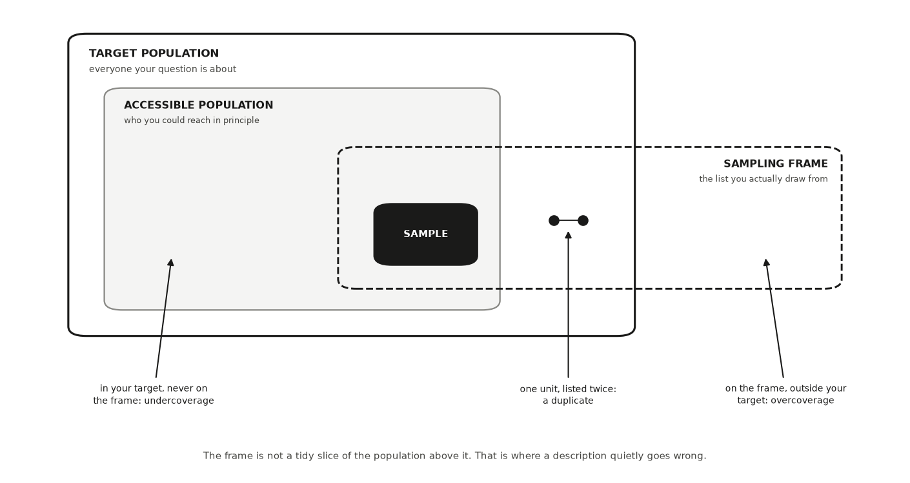
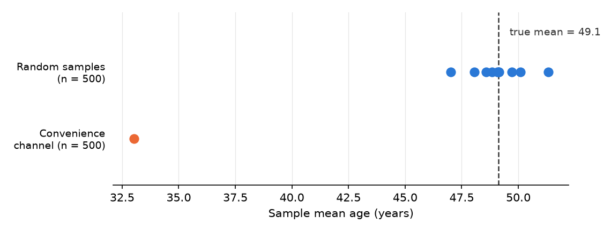
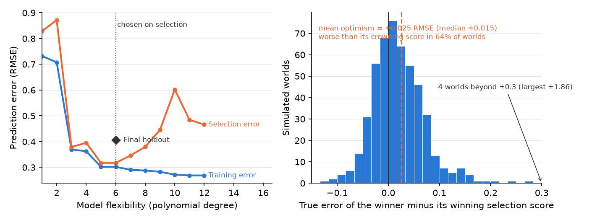
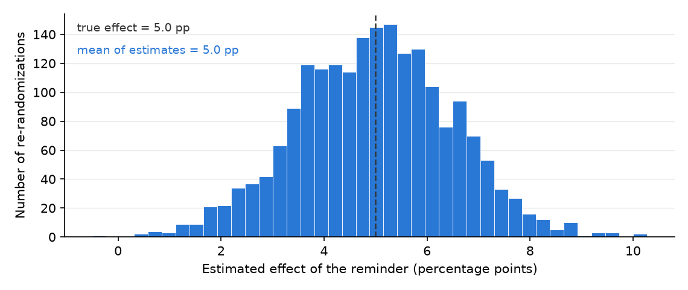
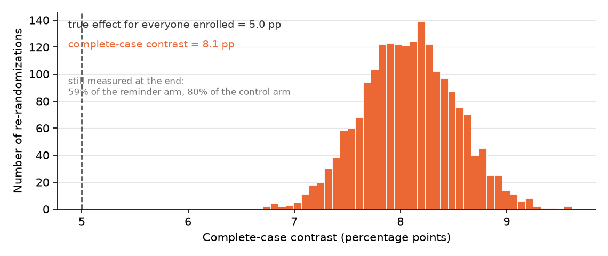

HONR 46400 · Evidence-Driven Research
Studio 5 — Develop the pathway
What you can defend when you leave
Studio 5
Commit to the research pathway your question and your licence actually support, and say what that pathway can and cannot establish.
The milestone ahead
Studio 5
This studio closes with Milestone 5: Your pathway, declared, a short chapter of its own after the lessons. What it asks you to produce. Research Contract v1: objective by target and reach by data strategy by warrant, with the pathway declared and its limits written before any result exists.
The lessons in this studio
Studio 5 · Road map
- Lesson 14 — Observational Descriptive Research: either your four boxes and selection diagram, if this is your pathway, or the classification drill that rules it out.
- Lesson 15 — Observational Causal Research: either your causal diagram with its leverage named and priced, or the drill that shows why this road is not yours.
- Lesson 16 — Experimental Descriptive Research: either your revealed-characteristic estimand with its demand and instrument threats named, or the drill run on your own question.
- Lesson 17 — Prediction and Generalization: either your signed four-part forecasting contract with its boundary, or the contrast drill: the plain rejection line, the prediction-time leakage check run on your own features, and two sentences on why prediction answers a different question.
- Lesson 18 — Experimental Causal Research: either your treatment, outcome, and potential outcomes with the nearest threat named, or the drill plus the confounder that blocks the causal reading.
- Lesson 19 — Hybrid and Complex Designs: if your design has stages: the stage-by-stage map, its weakest link, and the one-sentence justification for keeping or cutting it.
Observational Descriptive Research
Lesson 1 of this studio · Chapter 14
which group your data can honestly speak for
The research decision
Chapter 14
Which group your observed data can honestly speak for, and where exactly the line falls past which a description of your sample is no longer allowed to become a claim about a wider population. You draw that line, and you write down the sentence on the far side of it that you refuse to say.
The words this chapter uses
Chapter 14 · Key terms
Observational descriptive research
you sample and measure without assigning anyone a condition, then summarize what you found.
Undercoverage
people who belong in your target and never make the list.
Overcoverage
records on the list for people outside your target altogether.
Selection
any process that decides who lands in your data instead of chance alone.
The first question is never about your math
Chapter 14 · Why this decision matters
“Which group did your procedure actually reach?”
- A policy stakeholder reads your report before deciding whether it applies to their city.
- The decision on the table: which group your data can honestly speak for.
- That is a question about your procedure, not about your arithmetic.
The most common failure is precise, well formatted, and about the wrong group
Chapter 14 · Why this decision matters
- A result quietly describes one group while claiming to speak for another.
- Nothing in the estimate looks wrong, and the formatting is fine.
- This chapter has you name the group your data reach.
- Then refuse the sentence that swaps it for a group your data never touched.
You sample and measure; you never assign
Chapter 14 · The concept
- Pull every roll call record in a legislature; report how often each member crossed party lines.
- No one was assigned a condition. You sampled, measured, and summarized.
- Inquiry and answer strategy are both descriptive: distributions and relationships.
- With care, those estimates generalize to a population.
- On their own they do not identify a causal effect.
Four boxes stand between your question and your data
Chapter 14 · The concept
Target population
everyone your question is about: every customer a streaming service will ever bill
Accessible population
the part of the target you could reach in principle, given time and cost
Sampling frame
the concrete list you actually draw from, such as the current subscriber list
Sample
the customers you actually survey, drawn from the frame and no wider
The frame crosses the edge of your target, and that is where errors live
Chapter 14 · The concept
- Undercoverage: people who belong in your target and never make the list.
- Overcoverage: records on the list for people outside your target altogether.
- Duplicate: one person listed twice, quietly given two chances of being picked.

The four groups a description has to keep straight. The frame crosses the edge of your target population, which is where the three coverage errors live: people inside the target who never reach the list, records on the list that fall outside the target altogether, and one unit listed twice.
A survey outside one dining hall selects for people who eat there at lunch
Chapter 14 · The concept
Selection
any process that decides who lands in your data instead of chance alone
Nonresponse
the units you drew who never gave you data
- Two processes decide how the boxes differ. These are the two.
- Of 500 people contacted, 300 reply, and the 200 silent ones are rarely random.
Size shrinks the wobble; it does nothing to a tilt
Chapter 14 · The concept
- When either process relates to the thing you are measuring, your summary drifts.
- No amount of extra data pulls it back (Bethlehem 2010).
- Size shrinks only the sample-to-sample wobble.
- A systematic tilt in who you reached survives every extra observation (Meng 2018).
A 2% billing-error rate, and the headline writes itself
Chapter 14 · A worked example
- Billing-error rate: the fraction of customers whose monthly charge comes out wrong.
- 2 wrong charges in 100 customers is a 2% billing-error rate.
- The analytics team emails a survey to a random draw from the subscriber list.
- The survey reports 2%. The headline: “the service has a 2% billing-error rate.”
The customers hit hardest quit before the survey went out
Chapter 14 · A worked example
- Target population: every customer the service bills (Groves et al. 2009).
- Sampling frame: the current subscriber list, because only those people get the survey.
- Charged twice, or charged after canceling, and most likely to have quit in frustration.
- Survivorship selection: a filter that keeps the people least likely to show the problem.
One sentence is licensed; the other is the silent upgrade
Chapter 14 · A worked example
- That is the licensed claim. It names the box the data reached.
- The sentence to refuse: “the service’s billing-error rate is 2%.”
- The true rate across everyone billed is almost certainly higher.
- The worst-hit customers were gone before the survey went out.
among customers still subscribed, the billing-error rate is 2%
Build the whole customer base, let the worst-hit quit, then survey
Chapter 14 · A worked example
- Two rates print: everyone billed, and the current subscribers the survey can see.
- A third line reports how many customers left the frame.
- Nothing here is a sampling error. The draw is perfect.
import numpy as np, pandas as pd
SEED = 464
rng = np.random.default_rng(SEED)
n = 50_000
# Everyone the service bills. Wrong charges are what we want to count.
wrong_charge = rng.random(n) < 0.060
# Customers hit by a wrong charge quit far more often — and quitters leave the
# subscriber list, which is the frame the survey draws from.
quit = rng.random(n) < np.where(wrong_charge, 0.70, 0.09)
target_rate = wrong_charge.mean()
frame_rate = wrong_charge[~quit].mean()
print(f"target population (everyone billed) : {target_rate*100:.1f}%")
print(f"sampling frame (current subscribers) : {frame_rate*100:.1f}%")
print(f"customers who left the frame : {quit.mean()*100:.0f}%")
print("\nthe survey can only ever see the second number. no sample size,")
print("and no random draw from that list, closes the gap to the first")Ten honest samples and one convenience sample, all of size 500
Chapter 14 · A seeded simulation
- Seed: a fixed starting point for a random-number generator.
- The same seed reproduces the same draws, so your run matches the figure.
- A population of 100,000 whose true mean age is known by construction.
- The convenience channel mostly reaches younger people.
import numpy as np
import matplotlib.pyplot as plt
SEED = 464
rng = np.random.default_rng(SEED)
population = np.clip(rng.normal(49, 17, size=100_000), 18, 90)
truth = population.mean()
random_means = [rng.choice(population, 500, replace=False).mean()
for _ in range(10)]
weights = np.exp(-(population - 25) ** 2 / (2 * 12 ** 2)) # younger = likelier
convenience = rng.choice(population, 500, replace=False,
p=weights / weights.sum())
fig, ax = plt.subplots(figsize=(7.6, 2.9))
ax.scatter(random_means, np.ones(10), s=60, color="#2a78d6", zorder=3)
ax.scatter([convenience.mean()], [0], s=60, color="#eb6834", zorder=3)
ax.axvline(truth, color="#333333", ls="--", lw=1.2)
ax.text(truth + .5, 1.55, f"true mean = {truth:.1f}", color="#333333",
fontsize=9)
ax.set_yticks([0, 1], ["Convenience\nchannel (n = 500)",
"Random samples\n(n = 500)"], fontsize=9)
ax.set_xlabel("Sample mean age (years)")
ax.set_ylim(-.7, 1.9)
plt.show()Same sample size, about sixteen years off
Chapter 14 · A seeded simulation
- The ten random means spread between about 47 and 51, around the truth.
- That spread is honest, quantifiable uncertainty.
- The convenience dot looks as confident as any other, and nothing warns you.

Ten random sample means cluster around the true mean age; the single convenience-channel mean sits far below it.
An AI failure case
Chapter 14
Where the tool failed
You ask a chatbot: “My survey of current subscribers shows a 2% billing-error rate on a large panel. Can I report the service’s billing-error rate as 2%?” It answers with full confidence: “Yes. With a sample that large, your estimate is precise and reliable.” This is wrong in two named ways at once. It commits a silent scope change, quietly upgrading “current subscribers” to “the service’s customers,” and it leans on the fallacy that a big sample cures a tilted one.
How it failed
Chapter 14 · An AI failure case
- You catch it because you wrote your own answer first, and yours named the frame: the customers still subscribed, not everyone the service bills, so the swap is visible on sight.
- Then you check the mechanism against the data.
- The customers with the worst billing errors canceled before the survey went out, so missingness relates directly to the outcome you count.
- A larger panel of current subscribers only estimates the current subscribers’ error rate more precisely.
- It never reaches the people who left.
Do not delegate
Chapter 14
This stays yours
Three decisions stay yours alone. First, which population your project is really about: the AI does not know your question’s intent. Second, which frame you can honestly reach, and therefore the coverage gap you must disclose. Third, the boundary line itself: the exact sentence where your description stops and the population claim you refuse to make. You may ask an AI to attack that line, never to draw it for you.
It is your turn
Chapter 14 · Your move
- Decide which case you are in.
- If this is your pathway, write your four boxes, one line each: target population, accessible population, sampling frame, sample.
- Draw your selection diagram: an arrow from each box to the next, with the filter that removes people written on the arrow.
- Write the two sentences that define your claim.
- If this is not your pathway, run the classification drill instead.
- Log the work in your AI Research Ledger, and verify the key claim with a named method from the Verification Guide; simulation fits here, because the claim is about how a sampling procedure behaves rather than about a fixed number.
Work it in the companion notebook with Chapter 14 open beside it. Log every delegation in your AI Research Ledger.
Observational Causal Research
Lesson 2 of this studio · Chapter 15
whether your comparison has earned the word because
The research decision
Chapter 15
Whether your observational comparison has earned the word because or must stop at associated with. You settle it by naming the one confounder the comparison turns on and writing the identification argument that closes the back door, or by admitting in writing that you have none.
Your advisor’s reply: after is not because
Chapter 15 · Why this decision matters
- You wrote: the treated group did better, so the treatment worked.
- Her reply is the sentence you will hear for the rest of your research life.
- “After is not because.”
- “Show me the world where they were not treated, or admit you are guessing.”
Almost every question worth asking forbids the clean experiment
Chapter 15 · Why this decision matters
- You cannot assign a person a disease, a country a war, a wild animal a gut microbe.
- So the craft is deciding when a comparison is trustworthy enough to carry a cause.
- You make that decision out loud and in writing.
- Get it wrong and a paper claims more than its data support.
- Get it right and a modest, bounded claim becomes credible.
A causal claim is a claim about a world you never see
Chapter 15 · The concept
The conditions you compare were set by the world rather than by you, so a causal reading has to be argued rather than assumed (Blair et al. 2023).
Counterfactual
the outcome that would have happened under the choice that was not made
Confounder
a third factor that pushes on both who gets the treatment and the outcome
The back door is the path that steals the credit
Chapter 15 · The concept
- A causal diagram is a picture of arrows, each meaning “this directly influences that.”
- The confounder opens a back door: a path linking treatment and outcome through it.
- That path runs through the confounder instead of through any real effect.
- A raw comparison sees both paths at once, and blames the treatment for the confounder’s work.
Two moves close the back door without an experiment
Chapter 15 · The concept
Selection on observables
identifying an effect by adjusting for a set of measured confounders sufficient to block every back-door path
Natural experiment
a situation where a chance-like force outside anyone’s control decided who got treated, making assignment as-if random
Adjusting for the wrong variable manufactures bias
Chapter 15 · The concept
- A mediator sits on the causal path itself.
- Coffee may act on lifespan partly through blood pressure, so adjusting throws away part of the effect.
- A collider is a variable that treatment and outcome both push on.
- Adjusting for “healthy aging” study membership creates a link that exists nowhere in the world.
- Adjust for common causes, and leave mediators and colliders alone (Pearl 2009).
You owe a reader the argument, not the adjustment
Chapter 15 · The concept
- An identification argument is your written reason that the comparison recovers a real effect.
- Every design here rests on load-bearing assumptions the data can never fully confirm (Hernán & Robins 2020).
- Selection on observables needs a sufficient adjustment set and groups that overlap.
- A visa-lottery design needs a random lottery that touches lifespans only through the trip.
- Name your design’s list. One sentence per assumption is enough.
The word is not the argument
Chapter 15 · The concept
- The causal-language boundary is the point past which your evidence stops earning because.
- Past it, the defensible phrase is associated with.
- You hit it when you cannot make the identification argument honestly.
- Typing “natural experiment” over a comparison does not argue its assumption.
Mice carrying the microbe are leaner. Stake a thesis on it?
Chapter 15 · A worked example
- You study wild-derived mice in a biology lab.
- Those whose gut carries a particular fiber-digesting bacterium are, on average, leaner.
- The headline writes itself: the microbe causes leanness.
Diet fills the third box, and ten thousand mice do not help
Chapter 15 · A worked example
- Draw three boxes: microbe, leanness, and anything that could drive both.
- Diet is a confounder: high-fiber foragers carry more of the bacterium.
- They also stay leaner for reasons that have nothing to do with the microbe.
- Diet points into both boxes, so the naive comparison mostly measures the diet gap.
- A colony of ten thousand makes that wrong number precise, and no less wrong.
“We controlled for diet” is not identification
Chapter 15 · A worked example
- If you recorded diet, compare carriers to non-carriers within high-fiber, then within low-fiber.
- Average the two honest within-diet differences.
- If the gap collapses toward zero, the microbe was mostly a passenger of diet.
- An unrecorded trait driving both foraging and metabolism keeps the back door open.
- Then your defensible claim is that the microbe is associated with leanness.
Build mice where the microbe does nothing, then read the gap
Chapter 15 · A worked example
- Diet drives both the microbe and leanness. The true microbe effect is planted at zero.
- Watch the naive carrier-versus-noncarrier gap against that planted zero.
- Then watch the two within-diet gaps, and their average, come back toward zero.
import numpy as np, pandas as pd
SEED = 464
rng = np.random.default_rng(SEED)
n = 10_000
# Diet drives BOTH the microbe and leanness. The microbe itself does nothing.
high_fiber = rng.random(n) < 0.5
microbe = rng.random(n) < np.where(high_fiber, 0.75, 0.25)
leanness = 20 - 3.0 * high_fiber + rng.normal(0, 1.5, size=n) # lower = leaner
df = pd.DataFrame({"high_fiber": high_fiber, "microbe": microbe,
"leanness": leanness})
naive = df[df.microbe].leanness.mean() - df[~df.microbe].leanness.mean()
within = (df.groupby("high_fiber")
.apply(lambda g: g[g.microbe].leanness.mean()
- g[~g.microbe].leanness.mean(), include_groups=False))
print(f"true microbe effect : {0.0:+.2f}")
print(f"naive carrier-vs-noncarrier gap : {naive:+.2f}")
print(f"within high-fiber mice : {within[True]:+.2f}")
print(f"within low-fiber mice : {within[False]:+.2f}")
print(f"average of the two within-diet gaps: {within.mean():+.2f}")
print("\nthe naive gap is the DIET gap wearing the microbe's name;")
print("ten thousand mice make it precise, not true")An AI failure case
Chapter 15
Where the tool failed
You paste your mouse comparison into a chatbot and ask, “Is this a natural experiment, and can I say the microbe causes leanness?” It answers with a confident, well-formatted yes: your setup “resembles a natural experiment,” the difference “can be read causally,” the write-up “looks rigorous.” This is two named failures at once: plausible-but-wrong-method, attaching a design label to a comparison whose key assumption plainly fails, and silent scope change, upgrading associated with to because while sounding like it settled the question. Fluency is not evidence. You catch it by refusing the label and asking the one question the model cannot answer for you: how was treatment actually assigned? No lottery, no cutoff, no outside force decided which mice carried the microbe. They sorted themselves by diet and behavior, so there is no as-if-random assignment, the back door stays open, and because is not earned. Say associated with, and log why.
Do not delegate
Chapter 15
This stays yours
Three decisions stay yours alone. Whether your design identifies a causal effect is a judgment about how treatment was really assigned, and only you know that. Which confounder most threatens your comparison turns on the mechanism, which a model cannot see in your data. And whether your finding earns because or must stop at associated with is the whole skill of this chapter. A tool will happily call your comparison a “natural experiment” because you typed the words. Earning because is your signature, not the model’s.
It is your turn
Chapter 15 · Your move
- Decide which case you are in.
- If this is your pathway, write your causal question as exactly two things: a treatment (the thing that varies) and an outcome (the thing you measure).
- Draw the causal diagram.
- Name your leverage and its price.
- Write down one number you would recompute by a second route to check any estimate a collaborator or an AI hands you, and say what result would make you abandon the causal reading entirely.
- If this is not your pathway, run the classification drill.
- Log all of it in your AI Research Ledger, and verify with a named method from the Verification Guide; the causal diagram is the method built for this chapter, and simulation with a confounder you plant yourself is the strong second check.
Work it in the companion notebook with Chapter 15 open beside it. Log every delegation in your AI Research Ledger.
Experimental Descriptive Research
Lesson 3 of this studio · Chapter 16
whether the number your randomized study reports is a property the world already has, or an effect you would go out and cause
The research decision
Chapter 16
A coin flip does not decide what kind of question you asked. You decide whether your randomized study is measuring a property the world already has or testing an intervention you would deploy, and you name the artifacts your measurement still has to guard against before the number means anything.
Your advisor stops at one line of your methods page
Chapter 16 · Why this decision matters
- Random assignment feels causal by reflex.
- That reflex is the trap this chapter defuses.
“You randomized,” they say, “so you wrote causes. Show me the question first.”
The question fixes the kind, not the procedure
Chapter 16 · Why this decision matters
- Aim the flip at “what would change if we deployed this?” That is a causal study.
- Aim it at “how much of this property sits in the world right now?” That is a measurement.
- Mislabel the second as the first and you overclaim.
- You promise a lever your evidence never tested.
Random assignment can do the work of a measurement design
Chapter 16 · The concept
- RDSS calls this the experimental-descriptive pathway (Blair et al. 2023).
- The design reveals a characteristic units do not hand over directly.
- The inquiry stays descriptive, so randomizing alone licenses no causal claim.
An experiment can be an instrument rather than an intervention
Chapter 16 · The concept
A latent characteristic: how much a search interface’s position pulls clicks, apart from how good each result is (Joachims et al. 2005).
Latent characteristic
a real property you cannot read off directly, so a design has to reveal it
Controlled stimulus
a version of a prompt, item, or setting that you fix on purpose and assign by chance
Experiment as a measurement instrument
using randomly assigned controlled stimuli to expose a latent characteristic and report it as a plain description
- The controlled stimulus: the same result in slot 1 for some sessions, slot 5 for others.
- Chance decides which, so any difference pins to the version and not to who received it.
- What you report is the estimand: the exact quantity the design is built to state.
A measurement can be confident and still wrong
Chapter 16 · The concept
- The setup itself is one of the ingredients of the number.
- Two artifacts do most of the damage.
- Randomizing who sees what does nothing about a bias that hits every unit alike.
- So you design those two out separately.
Demand and instrument effects both threaten construct validity
Chapter 16 · The concept
A demand effect: users who notice they are in a study click more carefully than they would at home (Orne 1962).
Demand effect
when the people being measured guess what you are looking for and drift toward it
Instrument effect
when the measuring device or wording moves the reading on its own
Construct validity
the degree to which your number estimates the concept you meant rather than something adjacent
- An instrument effect: the logger credits position with attention slot 1’s larger thumbnail earned.
- Both threaten construct validity, so your number may estimate something adjacent (Cronbach & Meehl 1955).
A streaming team needs a number nobody publishes
Chapter 16 · A worked example
- How much of a track’s play count comes from where it sits?
- And how much from how well it matches the listener?
- Nobody prints that number anywhere, so they build an instrument.
- One fixed probe track: identical audio, identical artwork, slot assigned at random.
There is a causal effect inside the study, and the question stays descriptive
Chapter 16 · A worked example
- Honest: “for these sessions, slot 1 drew about three times the plays of slot 5, at equal quality.”
- Forbidden: “promoting tracks to slot 1 will triple their plays.”
- The second sentence is causal and deployable, and the design never tested it.
Guard the two artifacts before you trust even the descriptive number
Chapter 16 · A worked example
The redesign renders every slot identically and logs impressions server-side.
- A demand effect if the probe looks like an ad.
- An instrument effect if slot 1’s larger art or a slot-keyed logger inflates the count.
- Randomizing the slot does not fix a bias that hits every unit alike.
Run it: the randomization is real, the claim it licenses is still descriptive
Chapter 16 · A worked example
- 12,000 sessions, one identical probe track, slot dealt by chance.
- Watch the play rate fall from slot 1 down to slot 6.
- The last lines print the slot 1 versus slot 5 ratio, at identical audio and artwork.
- Then they print what the number does not say.
import numpy as np, pandas as pd
SEED = 464
rng = np.random.default_rng(SEED)
n_sessions = 12_000
# The probe track is identical every time; only its slot is dealt by chance.
slot = rng.integers(1, 7, size=n_sessions)
attention = {1: 0.150, 2: 0.104, 3: 0.081, 4: 0.066, 5: 0.055, 6: 0.043}
played = rng.random(n_sessions) < np.array([attention[s] for s in slot])
by_slot = (pd.DataFrame({"slot": slot, "played": played})
.groupby("slot")["played"].agg(sessions="size", play_rate="mean"))
by_slot["play_rate"] = (by_slot.play_rate * 100).round(1)
print(by_slot.to_string())
r1, r5 = by_slot.play_rate[1], by_slot.play_rate[5]
print(f"\nslot 1 vs slot 5 : {r1/r5:.1f}x, at identical audio and artwork")
print("descriptive, for these sessions. it does not say what promoting a")
print("DIFFERENT track to slot 1 would do")An AI failure case
Chapter 16
Where the tool failed
You paste your attention-curve result into an AI tool and ask it to write the findings sentence. It returns something fluent: “Moving tracks to the top slot causes a 3x lift in plays, so the team should promote its best matches to slot 1.” It reads like a win, but it is a silent scope change: you asked how attention is distributed, and the tool quietly answered a causal, deployable question about what promoting would do. You catch it by laying its sentence beside yours, word for word. Yours asked how much position pulls; its answer asked what to do. The tells are “causes,” “should,” and the imagined “lift” from an intervention you never ran. Reject it, and rewrite the claim bounded to the units you observed.
Do not delegate
Chapter 16
This stays yours
Three calls stay yours. Whether your inquiry is descriptive or causal, because the kind lives in your question’s words and no tool can read your intent. Whether the design actually measures your construct rather than something adjacent, which is a judgment about meaning, not about code. And which artifacts you are willing to stake your name on having ruled out. An AI partner can draft, locate, and attack. You declare and defend.
It is your turn
Chapter 16 · Your move
- Read your lead question aloud and underline the verb.
- If it is yours, name the latent characteristic your project has to reveal, the property nobody publishes anywhere, and the controlled stimulus you will assign by chance to reveal it.
- Write your estimand in one sentence: the exact quantity, for which units, described as it stands.
- Name the one demand effect and the one instrument effect you most fear, each with the redesign that rules it out.
- If this pathway is not yours, run steps 2 to 4 as a drill anyway, treating your question as if you had to measure it rather than intervene.
- Log the step in your AI Research Ledger, and verify at least one output with a named method from the Verification Guide.
Work it in the companion notebook with Chapter 16 open beside it. Log every delegation in your AI Research Ledger.
Prediction and Generalization
Lesson 4 of this studio · Chapter 17
whether you are forecasting unseen cases, and if you are, what score you would accept as honest
The research decision
Chapter 17
Decide whether your question is truly a forecast about cases nobody has seen yet, and if it is, sign a four-part contract before you fit anything: target, baseline, split, metric, plus a leakage check. That contract is what lets you defend a modest honest score and say out loud where your forecast stops working.
The words this chapter uses
Chapter 17 · Key terms
Model-selection bias
that flattery, the gap between a winner’s score on the data that crowned it and its honest score on data it has never met (Varma & Simon 2006).
Data leakage
information reaching your model, or your choice of model, that would not be available at the real forecast moment (Kaufman et al. 2011).
94% accuracy is not yet a reason to close a beach
Chapter 17 · Why this decision matters
- A county public-health officer decides week by week whether to post a swimming advisory.
- Blooms of cyanobacteria can turn a safe beach into a health hazard within days.
- A vendor arrives with a model that flags harmful blooms “with 94% accuracy”.
- The officer does not act on that number.
Beat the dumb rule, on weeks the model never saw
Chapter 17 · Why this decision matters
- The words are a public-health officer’s, burned before by an impressive-sounding number.
- Question one: is it better than the dumbest honest rule?
- Question two: was it earned on cases the model never saw?
- Get those wrong and you cry wolf or miss a real hazard.
Ninety-four percent compared to WHAT? Most weeks this lake is fine, so if I just say ‘no bloom’ every single week I am already right about eighty-five percent of the time.
Prediction is descriptive: what will happen, never why
Chapter 17 · The concept
Prediction
a best guess about a case whose outcome you cannot see yet
Reach
the cases a claim is meant to cover
Generalization
reach from your sample to a broader population
- Forecast whether a lake blooms next week, before next week exists.
- Prediction’s reach is unseen cases: units outside your data whose outcome is still unknown.
- Generalization’s reach: from the twelve lakes you measured to every lake in the watershed.
- Both go beyond the data in hand. Both need a named crossing that licenses them.
The baseline is free, and it is the bar you must clear
Chapter 17 · The concept
- Target: the one column you predict, for example
bloom_next_week. - Baseline: the dumbest honest rule, usually “always guess the most common answer”.
- If 85% of weeks have no bloom, the rule scores 85% for free. That is the bar.
- Metric: matched to the target. Accuracy misleads when blooms are rare.
- Score the baseline and every candidate on the same metric, or the comparison means nothing.
Fit on one summer, choose on another, lock the third
Chapter 17 · The concept
- Training set: the data each candidate model learns from. Your first summer.
- Selection set: separate data you use to choose among candidates. Your second summer.
- Final holdout: locked away and opened exactly once. Your third summer.
- Run them in that order: fit, then choose, then score your one choice.
On average, the score that crowned your winner flatters it
Chapter 17 · The concept
- Try twelve models and keep the best score you saw.
- Some model was always going to look best on that particular data.
- Partly because its errors fell kindly there. That gap is model-selection bias (Varma & Simon 2006).
- On one split the flattery can be large, small, or even reversed. Over many splits it points up.
- Change anything after the final score and the holdout has joined development.
A leak is information you could not have at forecast time
Chapter 17 · The concept
- The classic leak: the toxin concentration measured during the bloom.
- A leaked feature inflates your score on today’s data and collapses on tomorrow’s.
- Time carries its own version. Your exam weeks should come after the weeks you learned from.
- Splitting weeks at random hands the model August while asking it to forecast July.
- Keep the blocks in calendar order, and let the latest block be the one you lock.
Your baseline scores 0.85 before you fit anything
Chapter 17 · A worked example
- You want to warn swimmers a week ahead.
- Target:
bloom_next_week, one if the lake exceeds the advisory threshold. - Across three summers of weekly samples, 85% of weeks are clear.
- “Always say no bloom” scores 0.85 with no model at all.
- Features known a week early: water temperature, recent rainfall, upstream phosphorus load.
A three-point edge, and its smallness is the honest result
Chapter 17 · A worked example
- The three summers give you your three roles without any shuffling (Hastie et al. 2009).
- Summer one trains. Summer two chooses between a few feature lists. Summer three stays locked.
- You open summer three once, for the winner alone.
- On accuracy, the same metric as the baseline, the model lands around 0.88.
- These scores are constructed for the example.
0.97 with chlorophyll, and it is the outcome in disguise
Chapter 17 · A worked example
- A collaborator adds
chlorophyll_a, the pigment reading. The score leaps to 0.97. - Ask when chlorophyll is measured: during the very bloom you are forecasting.
- It is the outcome wearing a different label.
- Drop it and the score falls back to 0.88. The timing test, not the accuracy, decides.
- Trained on one shallow lake, so it does not yet generalize to a deep, cold reservoir.
Three summers in code, and the last one stays locked
Chapter 17 · A worked example
- The calendar order is the design: it decides the three roles.
tempandrainare known a week early.chlis measured during the bloom.- Three scores on the same locked rows: baseline, honest features, leaking feature.
import numpy as np, pandas as pd
SEED = 464
rng = np.random.default_rng(SEED)
# 120 weekly samples across three summers, 40 weeks each, six bloom weeks per
# summer (15%). The calendar order is the design: it decides the three roles.
summer = np.repeat([1, 2, 3], 40)
bloom = np.zeros(120, dtype=bool)
for s in (1, 2, 3):
weeks = np.where(summer == s)[0]
bloom[rng.choice(weeks, 6, replace=False)] = True
temp = 22 + 3.0 * bloom + rng.normal(0, 2.0, size=120) # known a week early
rain = 20 + 4.0 * bloom + rng.normal(0, 6.0, size=120) # known a week early
chl = 5 + 30 * bloom + rng.normal(0, 8.0, size=120) # measured DURING it
train, locked = summer == 1, summer == 3
z = lambda v: (v - v[train].mean()) / v[train].std()
acc = lambda pred: float((pred == bloom[locked]).mean())
baseline = acc(np.zeros(locked.sum(), dtype=bool)) # always "no bloom"
score = 0.55 * z(temp) + 0.35 * z(rain)
honest = acc(score[locked] > np.quantile(score[train], 0.85))
leaky = acc(chl[locked] > np.quantile(chl[train], 0.85))
print(f"baseline, always say 'no bloom' : {baseline:.2f}")
print(f"honest features, locked summer : {honest:.2f}")
print(f"with chlorophyll_a added : {leaky:.2f}")
print("\nthe third number is not skill. chlorophyll is measured during the")
print("bloom you claim to forecast, so it cannot exist at prediction time")Twelve polynomials, chosen on selection, scored once
Chapter 17 · A seeded simulation
- First half: one world, the three roles, and the winner’s single final-holdout score.
- Second half: 500 fresh worlds, comparing the winner’s true error with the score that crowned it.
- Each half restarts the seed, so either one runs on its own.
import numpy as np
SEED = 464
degrees = np.arange(1, 13)
def world(rng, n):
x = rng.uniform(-3, 3, n)
return x, np.sin(1.5 * x) + rng.normal(0, .35, n)
def rmse(coefs, data):
x, y = data
return np.sqrt(np.mean((np.polyval(coefs, x) - y) ** 2))
# Left panel: one world, the three roles.
rng = np.random.default_rng(SEED)
training, selection, final = (world(rng, 40) for _ in range(3))
fits = [np.polyfit(training[0], training[1], d) for d in degrees]
sel_err = np.array([rmse(c, selection) for c in fits])
chosen = int(np.argmin(sel_err)) # chosen on SELECTION, never final
print("chosen degree:", degrees[chosen])
print("selection score that chose it:", round(float(sel_err[chosen]), 3))
print("its one final-holdout score: ", round(rmse(fits[chosen], final), 3))
# Right panel: optimism in expectation. Restart the seed so this study
# reproduces on its own.
rng = np.random.default_rng(SEED)
gaps = []
for _ in range(500):
tr, sel, big = world(rng, 40), world(rng, 40), world(rng, 10_000)
f = [np.polyfit(tr[0], tr[1], d) for d in degrees]
se = np.array([rmse(c, sel) for c in f])
pick = int(np.argmin(se))
gaps.append(rmse(f[pick], big) - se[pick]) # true error minus its crown
gaps = np.asarray(gaps)
print("mean optimism:", round(float(gaps.mean()), 3), "RMSE")
print("median:", round(float(np.median(gaps)), 3))
print("winner truly worse than its crowning score in",
round(100 * float((gaps > 0).mean()), 1), "% of worlds")
print("largest single gap:", round(float(gaps.max()), 2))Only data the fit never touched can tell you to stop at six
Chapter 17 · A seeded simulation
- Blue training error only falls. Every extra degree bends the model closer to points it has seen.
- Orange selection error bottoms out near degree six, then climbs as the model memorizes noise.
- Nothing in the blue line alone would ever tell you to stop.

Left: training error keeps falling while selection error turns up after degree six, where the model is chosen; a diamond marks its one final-holdout score. Right: across 500 worlds, the winner’s true error exceeds its crowning score on average, with a long right tail.
An honest summary names the lean, the typical case, and the tail
Chapter 17 · A seeded simulation
- Across 500 worlds the winner’s true error exceeds its crowning score by 0.025 RMSE on average.
- Median 0.015, and the winner comes out worse than its crown in 64 percent of worlds.
- In the other third, luck ran the other way, so no single split can show you the bias.
- In 4 worlds the gap passed +0.3, topping out at +1.86.
- Those worlds are the procedure’s real risk showing itself.
An AI failure case
Chapter 17
Where the tool failed
You paste your feature list and ask an AI partner which features are safe to use. It answers with confidence: “chlorophyll_a is your strongest predictor, keep it.” The reasoning sounds airtight, because chlorophyll correlates almost perfectly with blooms. That near-perfect correlation is exactly the tell. This is the plausible-but-wrong-method failure: the tool ranked the feature on how well it fits the past, not on whether it could exist in time for a forecast. You catch it with one question statistics alone cannot answer. When is chlorophyll measured? During the bloom, so no forecast made a week earlier could have it. Drop it, watch the score fall back to 0.88, and keep the honest model.
Do not delegate
Chapter 17
This stays yours
Four calls stay yours. The target: what you forecast and why it matters. The baseline: the honest rule the model must beat. The timing of every feature: whether a value would truly exist at the forecast moment, which only you, who knows your data’s timeline, can settle. And the verdict on whether your project should predict at all. A tool that has never seen your timeline cannot make these calls for you.
It is your turn
Chapter 17 · Your move
- Ask the blunt version of your question: does your project need to guess an outcome for a case whose outcome does not exist yet?
- If yes, sign the four-part contract, in order.
- List your features and write beside each one the moment its value is settled.
- Write the boundary in one sentence: the cases your forecast covers, and the ones a reader should not assume it covers.
- If prediction is not your question, write the line that says so plainly, then run step 3 anyway.
- Log the step in your AI Research Ledger, and verify at least one output with a named method from the Verification Guide.
Work it in the companion notebook with Chapter 17 open beside it. Log every delegation in your AI Research Ledger.
Experimental Causal Research
Lesson 5 of this studio · Chapter 18
whether your difference in outcomes has earned the word “because”, and whose effect that difference actually describes
The research decision
Chapter 18
Decide whether the way treatment was assigned in your study lets you read a plain difference in outcomes as a cause, and then name exactly which quantity that difference estimates and whose effect it is. Nobody else can confirm how you sorted your units, so no tool gets to declare that your design proves cause.
The words this chapter uses
Chapter 18 · Key terms
Attrition
a unit’s outcome going missing after assignment.
Noncompliance
assigned units that never take the treatment, like patients who changed numbers and never got a text.
Spillover
treatment reaching the control arm, like a texted patient reminding an untreated friend.
“Better after treatment” is not “the treatment worked”
Chapter 18 · Why this decision matters
- A clinical-trial reviewer, reading a claim that a reminder improved medication adherence.
- The treated group did better. So did the healthier, the more organized, the younger.
- The decision: has your difference earned the word because, and whose effect is it?
“Better after treatment” is not “the treatment worked.” Show me that chance, not the kind of patient, decided who got treated, and tell me exactly who your number speaks for.
The speed that hands you a number is the danger
Chapter 18 · Why this decision matters
- A tool can clean your data, run the comparison, and hand you a number.
- That speed is the danger.
- Paste back “the treatment worked” and you signed a claim you have not earned.
- The reviewer does not care how fluent the output sounded.
A causal question asks what would change if you intervened
Chapter 18 · The concept
Causal question
a question about what would change if you intervened rather than what merely goes together
Potential outcome Y(1)
what that unit would show with the treatment
Potential outcome Y(0)
what the same unit would show without it
- Causal: does a text reminder raise the share of patients who refill on time?
- Not causal: do patients who got reminders refill more?
- For Ms. R, Y(1) is refilling with the texts, Y(0) is refilling with nothing.
You will only ever see one of Ms. R’s two numbers
Chapter 18 · The concept
- Her causal effect is Y(1) minus Y(0).
- She was either texted or not, never both.
- Fundamental problem of causal inference: for one unit you see one of the two (Holland 1986).
- So her individual effect is unrecoverable.
Give up the individual effect and chase the average
Chapter 18 · The concept
- Average treatment effect (ATE): the average of Y(1) minus Y(0) across all your units.
- The typical effect, not any one unit’s.
- Example: on average, the reminder raised on-time refills by a few points.
Random assignment breaks the link between traits and treatment
Chapter 18 · The concept
- Random assignment: pure chance, a coin flip, decides which units get treated.
- Chance knows nothing about health or organization, so the groups are alike on average.
- Confounder: a third trait that pushes on both who gets treated and the outcome.
- Organized patients refill anyway and enroll easily, so a reminder looks effective even when it did nothing.
- That broken link is the entire reason an experiment can say because.
Eight hundred patients, a coin flip, and a 9-point gap
Chapter 18 · A worked example
- You want to know whether a daily text reminder raises on-time refills.
- You enroll 800 hypertension patients: 400 to the reminder arm, 400 to control.
- The reminder arm refills at 71 percent, the control arm at 62 percent.
- The coin, not the patient’s organization, sorted the arms.
Each arm produced its own set of stayers
Chapter 18 · A worked example
- Some patients stopped answering follow-up before the final measurement.
- The reminder arm shows who stayed with reminders; control shows who stayed without them.
- Complete-case contrast: a comparison of whoever happened to be measured in each arm.
- Those two observed groups need not be the same kind of people.
- An effect for the stayers may exist, but only under assumptions you state and defend.
Retention by arm is a warning light, not a verdict
Chapter 18 · A worked example
- The damage comes when who leaves is tied to what their outcome would have been.
- Different shares of similar patients can cost little; identical shares of very different patients, a lot.
- Report retention by arm first, before any effect.
- Say a quarter of the reminder arm went unmeasured and would have refilled at 50 percent.
- The arm then averages about 66, and the 9-point gap shrinks to about 4.
Run the trial twice: everyone randomized, then only those measured
Chapter 18 · A worked example
- Watch the retention line while you read the second gap.
- The organized share of those still seen is the line that gives it away.
- The two arms no longer describe the same kind of patient.
import numpy as np, pandas as pd
SEED = 464
rng = np.random.default_rng(SEED)
n_arm = 400
arms = {}
for arm, refills, dropout_if_disorganized in (("reminder", 284, 0.16),
("control", 248, 0.38)):
organized = rng.random(n_arm) < 0.5 # a trait you never observe
priority = organized + rng.normal(0, 0.6, size=n_arm)
refill = np.zeros(n_arm, dtype=bool)
refill[np.argsort(-priority)[:refills]] = True
# attrition the TREATMENT changes: reminders keep disorganized patients in
dropped = rng.random(n_arm) < np.where(organized, 0.04,
dropout_if_disorganized)
arms[arm] = {"refill": refill, "seen": ~dropped, "organized": organized}
r, c = arms["reminder"], arms["control"]
print(f"reminder arm, everyone randomized : {r['refill'].mean()*100:.0f}%")
print(f"control arm, everyone randomized : {c['refill'].mean()*100:.0f}%")
print(f"gap : "
f"{(r['refill'].mean() - c['refill'].mean())*100:+.0f} pp")
cc = r["refill"][r["seen"]].mean() - c["refill"][c["seen"]].mean()
print(f"\ngap among those still measurable : {cc*100:+.0f} pp")
print(f"retention : {r['seen'].mean()*100:.0f}% vs "
f"{c['seen'].mean()*100:.0f}%")
print(f"organized share of those seen : "
f"{r['organized'][r['seen']].mean()*100:.0f}% vs "
f"{c['organized'][c['seen']].mean()*100:.0f}%")
print("\nthe last line is the problem: the two arms no longer describe the")
print("same kind of patient, so the second gap is not an effect on anyone")Two thousand coin flips over the same 200 patients
Chapter 18 · A seeded simulation
- Every patient gets both refill rates: without a reminder, and with one adding 5 points.
- The random assignment is rerun 2,000 times, and each estimate is recorded.
- The seed makes every rerun reproduce this exact figure.
import numpy as np
import matplotlib.pyplot as plt
SEED = 464
rng = np.random.default_rng(SEED)
n, tau = 200, 5.0 # true effect: +5 points
y0 = np.clip(rng.normal(70, 12, n), 20, 95) # refill rate, no reminder
y1 = y0 + tau # exactly +5 for every patient
estimates = []
for _ in range(2000):
treated = rng.permutation(n) < n // 2 # a fresh coin-flip assignment
estimates.append(y1[treated].mean() - y0[~treated].mean())
estimates = np.array(estimates)
fig, ax = plt.subplots(figsize=(7.6, 3.2))
ax.hist(estimates, bins=40, color="#2a78d6", edgecolor="white", lw=.4)
ax.axvline(tau, color="#333333", ls="--", lw=1.2)
ax.text(.02, .92, f"true effect = {tau:.1f} pp", color="#333333",
fontsize=9, transform=ax.transAxes)
ax.text(.02, .82, f"mean of estimates = {estimates.mean():.1f} pp",
color="#2a78d6", fontsize=9, transform=ax.transAxes)
ax.set_xlabel("Estimated effect of the reminder (percentage points)")
ax.set_ylabel("Number of re-randomizations")
plt.show()The estimates center on the truth, and they still wobble
Chapter 18 · A seeded simulation
- Randomization distribution: every estimate this trial could have produced under a different coin flip.
- It centers almost exactly on the truth: mean of estimates 5.0 against a true 5.0.
- Most runs landed between about 2 and 8 points, and the extremes ran below zero and above 10.

The histogram of 2,000 re-randomized estimates centers on the true 5-point effect.
Keep the coin flip honest and change only who is measurable
Chapter 18 · What attrition does to that promise
- All 2,000 patients get a true benefit of 5 points.
- Under control, patients drop out only if their health is poor.
- Under the reminder the cut is harsher, so more of the sickest go unmeasured.
- Each of 2,000 re-randomizations takes the difference between the patients still seen.
import numpy as np
import matplotlib.pyplot as plt
SEED = 464
rng = np.random.default_rng(SEED)
N, reps, tau = 2000, 2000, 5.0
health = rng.normal(size=N)
y0 = 60 + 10 * health + rng.normal(0, 5, size=N) # refill rate, no reminder
y1 = y0 + tau # ... with the reminder
r0 = health > -0.8 # still measurable under control
r1 = health > -0.2 # ... under the reminder: the sickest drop out
contrasts = []
for _ in range(reps):
z = rng.permutation(N) < N // 2 # an honest coin flip
y = np.where(z, y1, y0)
retained = np.where(z, r1, r0)
contrasts.append(y[z & retained].mean() - y[(~z) & retained].mean())
contrasts = np.asarray(contrasts)
print("true effect for everyone enrolled:", np.mean(y1 - y0))
print("average complete-case contrast: ", contrasts.mean().round(2))Not one of 2,000 re-randomizations landed near the truth
Chapter 18 · What attrition does to that promise
- The truth is 5 points. The contrasts pile up around 8.1.
- Retention was 59 percent in the reminder arm against 80 percent in control.
- Leaving was tied to health, and health also drives the outcome.

The complete-case contrasts pile up near 8 points, far from the true 5-point effect.
An AI failure case
Chapter 18
Where the tool failed
You paste your trial into the tool and it reports, with full confidence, “the reminder raised on-time refills by 12 points, and the effect is significant.” The code runs without a single error. Here is the trap. A third of the reminder arm, the patients whose blood pressure was worst, stopped answering follow-up and left the study, so the tool computed the gap among the patients who stayed and labeled it “the effect of the reminder.” That is a silent scope change. The number is a complete-case contrast: it is not the effect for everyone you enrolled, and dropping the sickest patients from one arm pushed it up.
How it failed
Chapter 18 · An AI failure case
- You catch it by checking retention by arm and who was lost, not by re-reading the fluent paragraph.
- The reminder arm lost far more patients, and the ones it lost were the sickest, so who stayed was tied to what the outcome would have been.
- That makes the 12 points a complete-case contrast: not the effect for everyone enrolled, and not automatically an effect for any shared group of stayers, since each arm produced its own.
- A green check is not a correct result.
- You rewrite the sentence to report retention in both arms, to say plainly that this trial as run does not deliver the effect for everyone enrolled, and to run the what-if from the honesty test: how low would the missing patients’ refill rates have to be before the finding flips?
Do not delegate
Chapter 18
This stays yours
Three calls never leave your hands. You decide whether random assignment actually happened in your study, because a tool cannot see how you sorted the arms. You decide which quantity your number estimates and for whom, the effect for everyone enrolled, or whether attrition has left you without a causal number at all until you state an assumption and test how much it matters. And you decide whether the effect is large enough to act on, and whether it is even ethical to randomize real patients and withhold something from the control arm. You own the final sentence, its boundary, and its uncertainty.
It is your turn
Chapter 18 · Your move
- Write your treatment and your outcome as two short phrases.
- Take one real unit from your study and write Y(1) and Y(0) for it in plain words.
- Name the quantity your estimate targets and for whom, in one sentence a stranger could repeat back to you correctly. “Everyone I enrolled” is the default. “Only those who complied” and “only those who stayed” are both groups your treatment may have helped create, so neither is available from a simple subgroup comparison: naming one commits you to assumptions you must state.
- Name the threat nearest your design, whether attrition, noncompliance, or spillover, and the check you will run in your own data to see how bad it is: retention by arm, take-up by arm, contact between arms.
- If you cannot randomize, run steps 1 to 4 as a drill, then name the confounder that random assignment would have killed for you and the observational move you will use in its place.
- Log the step in your AI Research Ledger, and verify at least one output with a named method from the Verification Guide.
Work it in the companion notebook with Chapter 18 open beside it. Log every delegation in your AI Research Ledger.
Hybrid and Complex Designs
Lesson 6 of this studio · Chapter 19
whether the extra moving piece in your design earns its place, or just adds an error you cannot account for
The research decision
Chapter 19
When your answer has to be stitched together from several measurements or stages, decide whether the combined design is still one aligned thing you can diagnose before you run it. Stacking careful pieces does not automatically produce a careful result, and deciding to cut a piece you cannot characterize is as much a design decision as adding one.
The economist wants the error budget, not the headline number
Chapter 19 · Why this decision matters
- Your reviewer: an antitrust economist reviewing a report on how concentrated a market is.
- “Hand me the error budget: every quantity you measured, how you measured it.”
- “And how each one’s uncertainty flowed into the final answer.”
A precise result built on one uncharacterized step is a precise wrong answer.
A complex design fails quietly, because every piece looks careful
Chapter 19 · Why this decision matters
- Each piece looks careful on its own, so the whole looks careful too.
- An assembled answer is only as trustworthy as its worst-characterized piece.
- The assembly can amplify a small mistake into a large one.
- The decision: does the extra moving piece earn its place?
MIDA names the four parts; a hybrid design puts more than one piece in them
Chapter 19 · The concept
Blair, Cooper, Coppock and Humphreys named the four (Blair et al. 2019); RDSS develops them (Blair et al. 2023).
- Model: your written picture of how the world could work.
- Inquiry: the one exact quantity you want from it.
- Data strategy: every procedure that makes the data, from sampling to measurement.
- Answer strategy: what turns those data into an answer, uncertainty included.
A hybrid design is one with more than one moving piece
Chapter 19 · The concept
Complex, or hybrid, design
a research design whose four MIDA parts have more than one moving piece: several measurements, stages, or sub-questions stitched into a single answer
Alignment
all four parts point at the same single quantity
Error propagation
each measured input’s uncertainty flows into the final answer, sometimes amplified
Two careful pieces can quietly target different quantities
Chapter 19 · The concept
- Complexity breaks alignment in a fresh way.
- Each sub-measurement can be built well and be fine on its own.
- They can still target slightly different quantities.
- Those never combine into the one you named.
Square a measured share and you roughly double its error
Chapter 19 · The concept
- Each measured input’s uncertainty flows into the answer, sometimes amplified (Joint Committee for Guides in Metrology 2008).
- Say your answer depends on the square of a measured share.
- A 1% error in that share becomes roughly a 2% error in the result.
A small systematic error can hide behind a small random one
Chapter 19 · The concept
Bias
a systematic tilt that more data does not shrink
Variance
run-to-run wobble that more data does shrink
- Keep the lab’s two failure words close.
- Complexity lets a small systematic error hide behind an impressively small random one.
Your city’s grocery market gets one score, stitched from two measurements
Chapter 19 · A worked example
- Does a handful of chains dominate the market, or is it split among many sellers?
- A concentration index rises as a market’s sales pile up in fewer hands (U.S. Department of Justice & Federal Trade Commission 2023).
- Square each seller’s market share, add the squares.
share = its revenue / total market revenue.
Averaging twelve months buys precision, and the index stops wobbling
Chapter 19 · A worked example
- A single month of reported revenue is noisy.
- A holiday week or a late filing pushes any one chain’s figure up or down.
- So average twelve months for each chain before you compute shares.
- That crushes the variance: swap the months and the index moves a point or two at most.
Repetition does nothing for bias, and squaring amplifies it
Chapter 19 · A worked example
- The survey covers the chains, not the independent corner stores or online deliveries.
- So the total market revenue you divide by is systematically too small.
- Every share is therefore systematically too large, and shares get squared.
- Your data strategy and your model have drifted apart.
Run the index both ways and watch the wrong number hold still
Chapter 19 · A worked example
- The block computes the index with the survey’s total and with the true one.
uncovered = 22.0is real sales the survey never reaches.- Rerun it with different months and watch how little the wrong number moves.
import numpy as np, pandas as pd
SEED = 464
rng = np.random.default_rng(SEED)
months = 12
chains = {"chain A": 38.5, "chain B": 29.5, "chain C": 21.0, "chain D": 13.5}
uncovered = 22.0 # independents + online delivery: real sales, never surveyed
avg = {c: rng.normal(rev, rev * 0.09, size=months).mean()
for c, rev in chains.items()}
surveyed_total = sum(avg.values())
def index(total):
return sum((rev / total * 100) ** 2 for rev in avg.values())
print(pd.DataFrame({"avg monthly revenue ($m)":
pd.Series(avg).round(1)}).to_string())
print(f"\nindex using the SURVEYED total : {index(surveyed_total):,.0f}")
print(f"index using the true total : {index(surveyed_total + uncovered):,.0f}")
print("\naveraging twelve months bought precision, not correctness. the")
print("denominator is missing sales, so every share, and the index, tilts up")An AI failure case
Chapter 19
Where the tool failed
You paste your revenue table into an AI tool and ask for the concentration index. It returns, with total confidence, index = 2,862 ± 18. The number looks plausible for a market with a few big chains, the interval is tiny, and the code ran without an error. It is wrong. The tool propagated only the month-to-month revenue variance, the part you already crushed by averaging twelve months, and never modeled the systematic bias from a denominator that leaves out every seller your survey does not reach. That tight ± 18 describes wobble it could see and stays silent about the tilt it could not.
How it failed
Chapter 19 · An AI failure case
- You catch it in two moves.
- First, check the assumption the number rests on: does the total your shares divide by actually cover the whole market?
- Second, run a falsification move: recompute the index from a deliberately narrower survey, dropping the smallest chains too, and watch the “precise” index drift systematically upward.
- A quantity that shifts well outside its own stated interval had an uncertainty that was never honest.
- Verify the number, not the tidy interval beside it.
Do not delegate
Chapter 19
This stays yours
Three calls stay yours. You decide what single quantity your inquiry names (which market, over what geography and time window), whether each sub-design actually targets that same quantity so the parts align, and whether to trust a combined number your diagnosis says a systematic error dominates. A tool can propagate the arithmetic, but it cannot decide that a precise number is a correct one. That judgment is the whole point of the chapter, and it is yours.
It is your turn
Chapter 19 · Your move
- Write your design as an ordered list of the measurements and stages it takes to get from raw data to your answer.
- For each line, name which MIDA part it lives in and the single quantity it targets.
- Pick the piece whose error would hurt most and trace how its uncertainty reaches your final answer.
- Decide, and write the one-sentence justification.
- Name the systematic error in what remains that more data will never shrink, and what you would have to change instead: a different source, a wider sampling frame, a better instrument.
- Log the step in your AI Research Ledger, and verify at least one output with a named method from the Verification Guide.
Work it in the companion notebook with Chapter 19 open beside it. Log every delegation in your AI Research Ledger.
Milestone 5: Your pathway, declared
Studio 5 closes here
What the lessons handed you becomes one artifact you can defend.
What this milestone produces
Milestone 5
The artifact
What this milestone produces. Research Contract v1: objective by target and reach by data strategy by warrant, with the pathway declared and its limits written before any result exists.
What you bring
Milestone 5 · Check before you start
- Lesson 14 — Observational Descriptive Research: either your four boxes and selection diagram, if this is your pathway, or the classification drill that rules it out.
- Lesson 15 — Observational Causal Research: either your causal diagram with its leverage named and priced, or the drill that shows why this road is not yours.
- Lesson 16 — Experimental Descriptive Research: either your revealed-characteristic estimand with its demand and instrument threats named, or the drill run on your own question.
- Lesson 17 — Prediction and Generalization: either your signed four-part forecasting contract with its boundary, or the contrast drill: the plain rejection line, the prediction-time leakage check run on your own features, and two sentences on why prediction answers a different question.
- Lesson 18 — Experimental Causal Research: either your treatment, outcome, and potential outcomes with the nearest threat named, or the drill plus the confounder that blocks the causal reading.
- Lesson 19 — Hybrid and Complex Designs: if your design has stages: the stage-by-stage map, its weakest link, and the one-sentence justification for keeping or cutting it.
The practice
Milestone 5 · In the studio
- Use the route guide on the studio opener to choose your pathway, then read that lesson and at least one that does not fit, so you can say why yours does.
- Declare your pathway and write the crossing that licenses it: what makes your comparison mean what you claim.
- Write the limits: what this pathway cannot establish no matter how clean the execution.
- Update your claim boundary to match the pathway, and mark the change as a new Contract version.
The four rails, here
Milestone 5 · Every studio, these four
Ethics, permissions, and data exposure
A change of pathway can change your permission status; recheck rather than assume.
Evidence, provenance, and reproducibility
Name the prior work that used this pathway on a comparable question.
AI activity, verification, and human decisions
Ask an assistant to argue for a different pathway, then answer the argument yourself.
Uncertainty, claim boundary, and revision history
Different pathways carry different sources of uncertainty; name yours here.
A version, not a pass
Milestone 5
How the record works
Your milestone artifact is a dated, numbered version with the reason for the version attached. When later evidence changes it, you write the next version rather than editing the last one, because the sequence of changes is itself part of your research record.
The one rule
AI is your arm and your research assistant, not your brain.
AI can review AI, and a second model is a real auditor of the first. The last decision is always human.

EDR|AI · Studio 5 — Develop the pathway